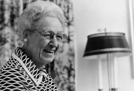

Biography
Virginia Apgar was born in Westfield, NJ, on June 7, 1909 and was the youngest of three. After graduating high school from Westfield High, she attended Mount Holyoke College. Following Mount Holyoke, Virginia attended Colombia University where she studied zoology. Soon after completing Colombia in 1933, she completed her residency in surgery in 1937. She then attended Johns Hopkins University, where she mastered in Public Health. After being encouraged to practice anesthesiology by the chairman of surgery at Colombia-Presbyterian Medical Center, she trained in anesthesia and received certification as an anesthesiologist.
Virginia Apgar worked for the March of Dimes Foundation as the vice president from 1954-1974 (the year she passed). Apgar brought attention to premature birth which is one of the March of Dimes top priorities. Apgar wrote and published many articles and essays in her lifetime as well as her book, "Is My Baby All Right?".
Virginia Apgar passed away on August 7, 1974 in Manhattan, New York.